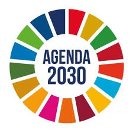
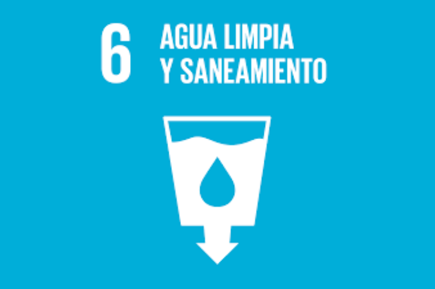
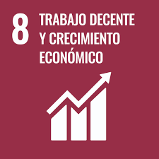

¿Que es Agenda 2030?
La Agenda 2030 es un plan de acción global adoptado por las Naciones Unidas en 2015 para lograr el desarrollo sostenible, a través de 17 Objetivos de Desarrollo Sostenible (ODS) y 169 metas. Busca erradicar la pobreza, proteger el planeta, reducir las desigualdades, promover la prosperidad y asegurar la paz, involucrando a gobiernos, empresas y ciudadanos en un esfuerzo conjunto.
Características Principales
La Agenda 2030 se caracteriza por ser universal (aplica a todos los países), integral (cubre las tres dimensiones del desarrollo: económica, social y ambiental), y transformadora (busca un cambio fundamental en los modelos de desarrollo). Además, se centra en el principio de "no dejar a nadie atrás", haciendo hincapié en la reducción de desigualdades y la atención a los más vulnerables.
¿Quiénes Participan?
La implementación de la Agenda 2030 es una responsabilidad compartida que requiere la colaboración de múltiples actores. Los principales participantes incluyen a los Gobiernos nacionales y locales, las organizaciones de la sociedad civil (ONGs, academia, sindicatos), el sector privado (empresas de todos los tamaños), y los propios ciudadanos a través de acciones individuales y colectivas. Las Naciones Unidas y otras organizaciones internacionales facilitan y coordinan este esfuerzo global.
Las 5 Esferas Clave (Las 5 P)
La Agenda 2030 se centra en cinco dimensiones fundamentales conocidas como las "5 P": Personas (bienestar), Planeta (protección ambiental), Prosperidad (progreso económico), Paz (justicia) y Pacto/Alianzas (colaboración global).
Un Acuerdo Histórico
La Agenda fue aprobada en el año 2015 por un total de 193 países miembros de las Naciones Unidas, comprometiéndose a cumplir las metas para el año 2030.
ODS 1 - Fin de la pobreza

El objetivo principal es erradicar la pobreza extrema en todas partes del mundo para 2030, que actualmente se mide como personas que viven con menos de 2,15 dólares al día. Este ODS busca reducir a la mitad la proporción de hombres, mujeres y niños de todas las edades que viven en situación de pobreza en todas sus dimensiones, e implementar sistemas y medidas de protección social adecuados para todos, incluidos los niveles mínimos.
ODS 2 - Hambre cero

Este ODS aborda la necesidad urgente de poner fin al hambre, garantizar el acceso de todas las personas, en particular los pobres y las personas en situaciones vulnerables, incluida la infancia, a una alimentación suficiente y nutritiva durante todo el año. También se enfoca en promover la agricultura sostenible, duplicar la productividad agrícola y los ingresos de los productores de alimentos en pequeña escala, y asegurar la diversidad genética de semillas, plantas y animales de granja.
ODS 3 - Salud y bienestar

El objetivo es reducir la tasa mundial de mortalidad materna y neonatal, poner fin a las epidemias de SIDA, tuberculosis, malaria y otras enfermedades transmisibles, y luchar contra las enfermedades no transmisibles. También busca garantizar el acceso universal a servicios de salud sexual y reproductiva, lograr la cobertura sanitaria universal, reducir las muertes y enfermedades causadas por productos químicos peligrosos y la contaminación del aire, el agua y el suelo, y fortalecer la prevención y el tratamiento del abuso de sustancias.
ODS 4 - Educación de calidad

Este objetivo garantiza que todas las niñas y todos los niños terminen la enseñanza primaria y secundaria gratuita, equitativa y de calidad, que conduzca a resultados de aprendizaje pertinentes y efectivos. Se centra en la igualdad de acceso a la formación técnica, profesional y superior, en la eliminación de las disparidades de género en la educación, y en asegurar que todos los jóvenes y una proporción considerable de los adultos tengan competencias de alfabetización y aritmética.
ODS 5 - Igualdad de género

El ODS 5 se dedica a poner fin a todas las formas de discriminación y violencia contra todas las mujeres y las niñas en todo el mundo. Esto incluye eliminar prácticas nocivas como el matrimonio infantil y la mutilación genital femenina, reconocer y valorar el trabajo de cuidado y el trabajo doméstico no remunerados, y asegurar la participación plena y efectiva de las mujeres y la igualdad de oportunidades de liderazgo en todos los niveles de toma de decisiones en la vida política, económica y pública.
ODS 6 - Agua limpia y saneamiento
Este objetivo se enfoca en lograr el acceso universal y equitativo al agua potable segura y asequible para todos, y en mejorar las instalaciones de saneamiento e higiene. Incluye metas para mejorar la calidad del agua, reducir la contaminación, aumentar el uso eficiente de los recursos hídricos, proteger y restablecer los ecosistemas relacionados con el agua (como montañas, bosques, humedales, ríos, acuíferos y lagos), y apoyar la participación de las comunidades locales en la gestión del agua y el saneamiento.
ODS 7 - Energía asequible y no contaminante

El ODS 7 busca garantizar el acceso universal a servicios de energía asequibles, fiables y modernos. Su principal componente es aumentar sustancialmente la proporción de energía renovable en el conjunto de fuentes de energía y duplicar la tasa mundial de mejora de la eficiencia energética. Esto implica promover la inversión en infraestructura energética y en tecnología limpia, y ampliar la infraestructura y mejorar la tecnología para prestar servicios de energía modernos y sostenibles para todos en los países en desarrollo.
ODS 8 - Trabajo decente y crecimiento económico
Este objetivo promueve el crecimiento económico sostenido, inclusivo y sostenible, logrando niveles más elevados de productividad económica y mediante la diversificación, la modernización tecnológica y la innovación. Se centra en proteger los derechos laborales, promover entornos de trabajo seguros y protegidos, erradicar el trabajo forzoso y poner fin al trabajo infantil en todas sus formas. También busca reducir sustancialmente la tasa de desempleo juvenil y desarrollar estrategias para fomentar el turismo sostenible.
ODS 9 - Industria, innovación e infraestructura

El ODS 9 se enfoca en construir infraestructuras fiables, sostenibles, resilientes y de calidad, que apoyen el desarrollo económico y el bienestar humano. Promueve una industrialización inclusiva y sostenible, aumentando la contribución de la industria al empleo y al producto interno bruto, y fomenta la innovación y la investigación científica. Esto incluye facilitar el desarrollo de tecnologías, la investigación y la innovación nacionales, y mejorar el acceso de las pequeñas empresas industriales a los servicios financieros.
ODS 10 - Reducción de las desigualdades

Este objetivo busca reducir las disparidades de ingresos y de oportunidades dentro de los países y entre ellos. Se centra en potenciar y promover la inclusión social, económica y política de todas las personas, independientemente de su edad, sexo, discapacidad, raza, etnia, origen, religión o situación económica u otra condición. También incluye metas para mejorar la reglamentación y vigilancia de los mercados e instituciones financieras mundiales, y facilitar la migración y la movilidad ordenadas, seguras, regulares y responsables de las personas.
ODS 11 - Ciudades y comunidades sostenibles

El ODS 11 busca asegurar el acceso de todas las personas a viviendas y servicios básicos adecuados, seguros y asequibles, y mejorar los asentamientos marginales. Se centra en proporcionar acceso a sistemas de transporte seguros, asequibles, accesibles y sostenibles, aumentar la urbanización inclusiva y sostenible, proteger el patrimonio cultural y natural del mundo, y reducir el número de muertes y pérdidas económicas causadas por desastres. También busca reducir el impacto ambiental negativo per cápita de las ciudades, prestando especial atención a la calidad del aire y la gestión de desechos.
ODS 12 - Producción y consumo responsables

Este objetivo se enfoca en la gestión eficiente de los recursos naturales y la forma en que producimos y consumimos bienes y servicios. Sus metas incluyen lograr la gestión ecológicamente racional de los productos químicos y de todos los desechos a lo largo de su ciclo de vida, reducir a la mitad el desperdicio de alimentos per cápita mundial en la venta al por menor y a nivel de los consumidores, y lograr que las empresas adopten prácticas sostenibles. También busca promover las prácticas de contratación pública que sean sostenibles.
ODS 13 - Acción por el clima

El ODS 13 es una llamada a la acción urgente para combatir el cambio climático y sus impactos. Se centra en fortalecer la resiliencia y la capacidad de adaptación a los riesgos relacionados con el clima y los desastres naturales. Esto incluye incorporar medidas relativas al cambio climático en las políticas, estrategias y planes nacionales, así como mejorar la educación, la sensibilización y la capacidad humana e institucional en relación con la mitigación del cambio climático, la adaptación a él, la reducción de sus efectos y la alerta temprana.
ODS 14 - Vida submarina

Este objetivo promueve la conservación y el uso sostenible de los océanos, los mares y los recursos marinos. Las metas clave son reducir la contaminación marina de todo tipo, gestionar y proteger de forma sostenible los ecosistemas marinos y costeros para evitar efectos adversos importantes, poner fin a la sobrepesca, la pesca ilegal y las prácticas pesqueras destructivas, y conservar al menos el $10\%$ de las zonas marinas y costeras. También busca aumentar los conocimientos científicos y la transferencia de tecnología marina.
ODS 15 - Vida de ecosistemas terrestres

El ODS 15 se dedica a la protección, el restablecimiento y el uso sostenible de los ecosistemas terrestres. Esto incluye la gestión sostenible de los bosques, la lucha contra la desertificación, y la detención de la degradación de las tierras y la pérdida de diversidad biológica. Busca conservar los ecosistemas de montaña, adoptar medidas urgentes para reducir la degradación de los hábitats naturales y detener la pérdida de biodiversidad, y aumentar el apoyo mundial a los esfuerzos para combatir la caza furtiva y el tráfico de especies protegidas.
ODS 16 - Paz, justicia e instituciones sólidas

Este objetivo promueve sociedades pacíficas e inclusivas para el desarrollo sostenible, la provisión de acceso a la justicia para todos y la creación de instituciones eficaces, responsables e inclusivas a todos los niveles. Se centra en reducir significativamente todas las formas de violencia y las tasas de mortalidad conexas, poner fin al maltrato, la explotación, la trata y todas las formas de violencia y tortura contra los niños, y reducir considerablemente la corrupción y el soborno en todas sus formas.
ODS 17 - Alianzas para lograr los objetivos

El ODS 17 es fundamental ya que se centra en fortalecer los medios de implementación (financiamiento, tecnología, creación de capacidad, comercio y cuestiones sistémicas) y revitalizar la Alianza Mundial para el Desarrollo Sostenible. Esto implica movilizar recursos financieros, mejorar el desarrollo de tecnología, y promover un sistema de comercio multilateral universal, basado en normas, abierto, no discriminatorio y equitativo. La cooperación global es esencial para alcanzar todos los demás objetivos.
ODS 14 - El Objetivo Clave
El ODS 14 busca conservar y utilizar en forma sostenible los océanos. Datos fundamentales:
- El océano cubre el 71% de la superficie de la Tierra.
- El fitoplancton marino genera entre el 50% y el 85% del oxígeno, más que todos los bosques.
- Absorben una gran parte del CO2, aunque esto provoca la acidificación del agua.
- Exploración: A pesar de su tamaño, se estima que menos del 20% ha sido explorado por humanos.
Principales Amenazas
Los ecosistemas marinos enfrentan desafíos críticos:
- Plásticos: Una botella tarda 500 años en degradarse. Existen "Islas de Plástico" y microplásticos (menores a 5mm).
- Zonas Muertas: Áreas sin oxígeno donde la vida no puede prosperar.
- Pesca Fantasma: Redes abandonadas que siguen atrapando peces indefinidamente.
- Calentamiento: Provoca el blanqueamiento de corales por estrés térmico.
- Contaminación Marina: Se estima que 8 millones de toneladas de plástico acaban en el océano cada año.
Curiosidades de la Biodiversidad
El océano alberga criaturas fascinantes con características únicas:
- El Gigante: La Ballena Azul es el animal más grande que ha existido jamás.
- Anatomía extraña: Los pulpos tienen tres corazones.
- Reproducción: El Caballito de Mar es el único macho que da a luz.
- Simbiosis: El pez payaso vive protegido entre las anémonas.
- Unicornio del mar: El Narval es conocido por su largo colmillo.
- Sueño alerta: Los delfines duermen con un ojo abierto para respirar y vigilar.
- GPS Natural: Las tortugas marinas se orientan por el campo magnético de la Tierra.
- Eslabón clave: El Krill es un pequeño crustáceo base de la cadena alimentaria.
- Reina del mar: La Orca es considerada uno de los depredadores tope del océano.
Geografía y Ecosistemas Clave
Datos geográficos y especies vitales para el equilibrio:
- Profundidad: El punto más profundo es la Fosa de las Marianas.
- Mareas: Son provocadas principalmente por la gravedad de la Luna.
- Posidonia: Praderas submarinas vitales porque capturan carbono y dan refugio.
- Manglares: Bosques de la costa tolerantes a la sal.
- Peligro Crítico: La Vaquita Marina (en el Golfo de California) está al borde de la extinción.
Geografía y Ecosistemas Clave
Datos geográficos y especies vitales para el equilibrio:
- Inmensidad: El Pacífico es el océano más grande del planeta.
- Visible desde el espacio: La Gran Barrera de Coral es la estructura viva más grande.
- Profundidad: El punto más profundo es la Fosa de las Marianas.
- Mareas: Son provocadas principalmente por la gravedad de la Luna.
- Posidonia: Praderas submarinas vitales porque capturan carbono y dan refugio.
- Manglares: Bosques de la costa tolerantes a la sal.
- Peligro Crítico: La Vaquita Marina (en el Golfo de California) está al borde de la extinción.
Metas Prioritarias (Para 2025-2030)
Las metas se centran en acciones concretas y medibles:
- Reducir la Contaminación: Prevenir y reducir significativamente la contaminación marina de todo tipo.
- Proteger Ecosistemas: Gestionar y proteger sosteniblemente los ecosistemas marinos y costeros.
- Regulación Pesquera: Poner fin a la sobrepesca, la pesca ilegal y las prácticas destructivas.
- Conservación: Conservar al menos el 10% de las zonas marinas y costeras (Áreas Marinas Protegidas).
Impacto en la Economía
La "Economía Azul" depende directamente de la salud de los océanos. El impacto económico se puede ver en la siguiente tabla:
| Sector | Dependencia del Océano | ODS Relacionados |
|---|---|---|
| Pesca | Suministro directo de alimentos y empleo. | ODS 2, ODS 8 |
| Turismo Costero | Playas, arrecifes y ecosistemas saludables. | ODS 8, ODS 12 |
| Comercio Marítimo | Transporte de más del 80% del comercio mundial. | ODS 9, ODS 17 |
| Energía Oceánica | Generación de energía renovable (eólica marina, mareomotriz). | ODS 7, ODS 9 |
| Investigación y Biotecnología | Descubrimiento de compuestos y medicinas marinas. | ODS 3, ODS 9 |
Cooperación y Ley Marítima
Para lograr el ODS 14, es fundamental fortalecer la cooperación internacional:
- Conocimiento Científico: Aumentar la investigación y la transferencia de tecnología marina.
- Financiamiento: Proporcionar acceso a recursos financieros y apoyo tecnológico a los países en desarrollo.
- Aplicación de la Ley: Aplicación efectiva de la Convención de las Naciones Unidas sobre el Derecho del Mar (CONVEMAR) y otros instrumentos internacionales para la conservación.